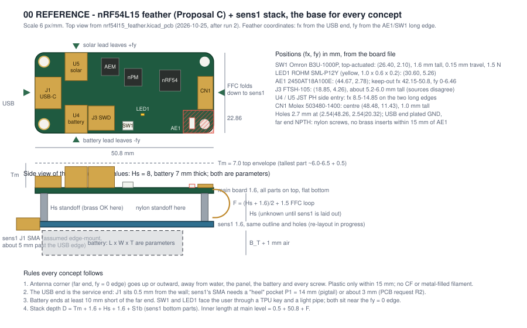
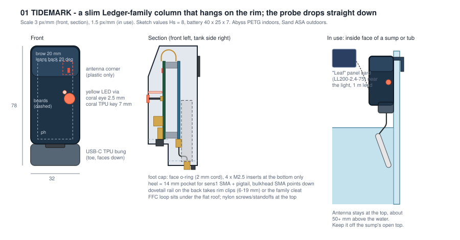
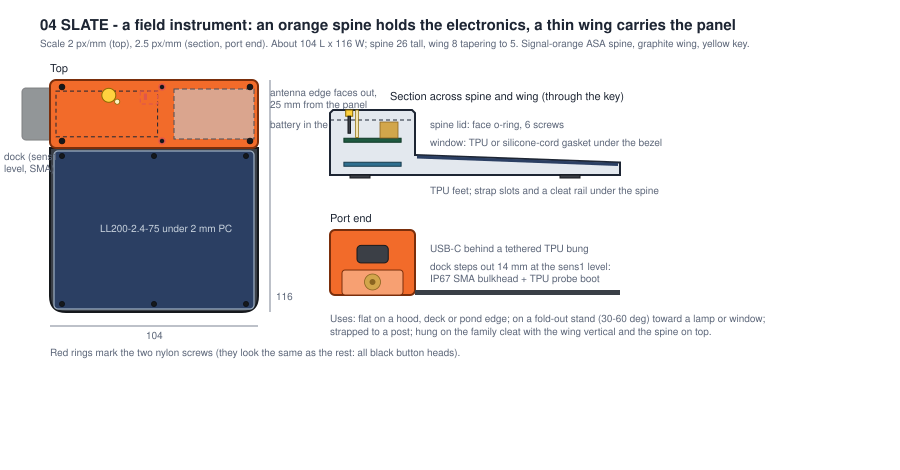
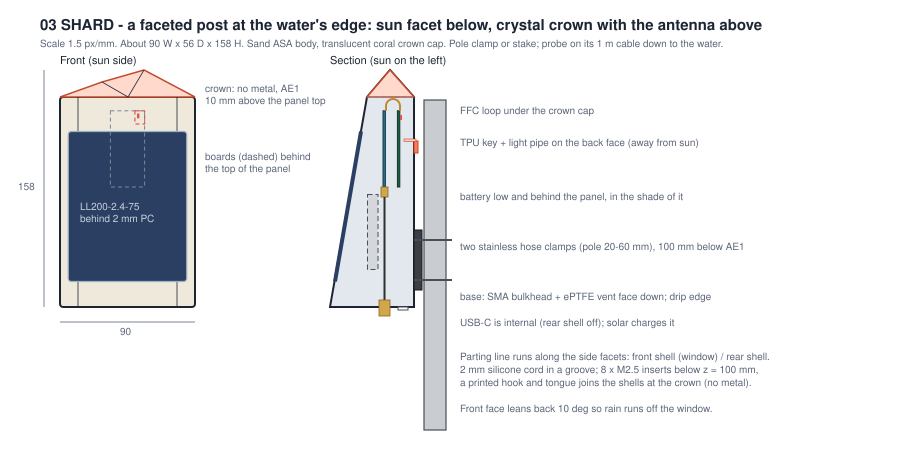
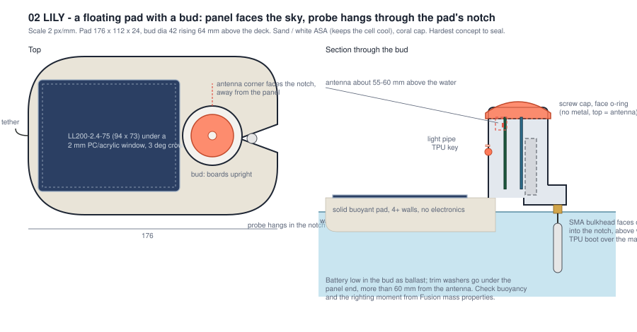
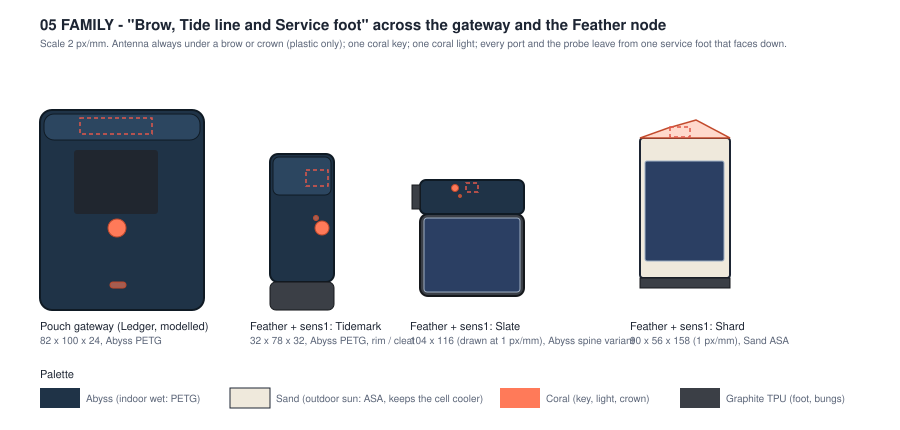

Four ways to house a solar pH node that lives by the water
Concepts only, no CAD. Every concept uses the same internal cartridge (sled, boards, battery, port plate) and the Proposal C board as laid out today. None needs a PCB change. Unknown numbers (sens1 stack height, battery) are parameters, and the sketches use Hs = 8 mm and a 40 x 25 x 7 mm cell. Full text, references and formulas are in concepts.md.
Recommendation
| # | Concept | Idea | Size (mm) | Looks | Setting | Print/seal | PCB | Total |
|---|---|---|---|---|---|---|---|---|
| 1 | Tidemark | Ledger-family column on the rim; probe drops straight down; remote leaf panel | 32 x 78 x 32 | 4 | 5 | 4 | 5 | 18 |
| 2 | Slate | Orange spine for the electronics, thin wing carrying the panel | 104 x 116 x 26 | 4 | 4 | 4 | 5 | 17 |
| 3 | Shard | Faceted post; panel on the sun facet, antenna in the crown | 90 x 56 x 158 | 4 | 4 | 3 | 5 | 16 |
| 4 | Lily | Floating pad with a bud; probe hangs in the pad's notch | 176 x 112 x 96 | 5 | 3 | 2 | 5 | 15 |
Tidemark for an indoor tank, sump, tub or reservoir: the smallest, easiest to seal, and it matches the Ledger gateway. Slate if the panel should be built in or the node lives outdoors. Both share the cartridge, so fusion-enclosure can model the core once.
PCB column: 5 = no change needed. Setting scores assume an indoor wet location; on an outdoor pond Shard and Lily score higher.
The board, the stack and the rules every concept follows

What sets the size
- The validated panel (PowerFilm LL200-2.4-75) is 94 x 73 mm, far bigger than the 50.8 x 22.86 board. A built-in panel sets the footprint.
- sens1's SMA sits past the USB edge, so every shell has a 14 mm heel at the sens1 level (about 3 mm with request R2).
- The FFC fold needs about (Hs + 1.6)/2 + 1.5 mm past the far edge.
Antenna rules
- Plastic only within 15 mm of AE1: no inserts, screws, CF or metal-filled filament. Nylon at the far holes.
- Never under the panel (at least 10-15 mm away), at least 10 mm from the battery, at least 25 mm from water.
- The antenna corner points up or outward. A 35 x 10 mm plastic zone is kept free for a U.FL flex antenna if RF1 is ever used.
Probe and ports
- Default: a pigtail to an IP67/68 SMA bulkhead, so the probe screws on from outside with a TPU boot. Replaceable without opening the case.
- USB-C: tethered TPU bung sealing in a 12.5 x 7 mm tunnel, pointing down.
- ePTFE vent and silica gel in every shell (the pH input is high impedance, and damp drifts readings).
Key, light, seal
- TPU 95A key co-printed in the wall; plunger 0.2 mm above the B3U (0.15 mm travel).
- Clear light pipe fused in the wall, ending 0.5 mm over the yellow LED, behind a coral eye.
- 2 mm silicone or EPDM cord face seals. IP figures are targets until dunk-tested.
Tidemark
Looks 4 · Setting 5 · Print/seal 4 · PCB 5 · 18The Ledger gateway's small sibling. A slim Abyss column hangs on the rim of a sump, tub or reservoir; the antenna, a coral eye and a coral key sit under its leaning brow, and the probe drops straight down from the heel. The panel is a separate "leaf" card you put where the light is, which matters most indoors.

Form and mounting
- 32 W x 78 H x 32 D. Boards upright with the USB end down, parts facing the front, sens1 and battery behind.
- Brow: top 20 mm leans back 20 deg; AE1 sits inside it.
- Dovetail rail on the back takes clips for 6-19 mm walls or the family cleat.
Ports and sealing (target IP66, IP67 geometry)
- Stepped foot cap: USB-C bung in the toe, SMA bulkhead, solar gland and vent in the heel. All face down.
- One face o-ring; 4 M2.5 inserts at the foot, more than 50 mm from AE1.
CMF
- Abyss PETG indoors, Sand ASA outdoors; coral TPU key, coral eye, graphite TPU bung; "ph" debossed.
Build (about 9.5 h, easy to moderate)
- Sleeve printed roof-down: the brow is a 20 deg lean, so no supports (this avoids Ledger's brow overhang problem).
- The cartridge slides in under the key plunger: SW1 must be the tallest part from fx 26 to the far edge, or use the front-plate variant.
Slate
Looks 4 · Setting 4 · Print/seal 4 · PCB 5 · 17A field instrument that shows how it's made. A signal-orange spine holds the electronics and battery; a thin graphite wing carries the panel behind a polycarbonate window held by a ring of black screws. It lies flat, stands on a fold-out leg toward a lamp, straps to a post, or hangs on the cleat. The antenna faces out of the spine, 25 mm from the panel.

Form and mounting
- 104 x 116. Spine 34 wide x 26 tall; wing 8 mm thick tapering to 5 (sheds water at 3 deg).
- Boards flat, parts up; battery in the far end of the spine, at least 14 mm from AE1.
- Fold-out leg (30 / 45 / 60 deg), strap slots, cleat rail, TPU feet.
Ports and sealing (target IP66)
- Port end steps out into a 14 mm dock: SMA bulkhead and boot below, USB-C bung above.
- Spine lid with a face o-ring, plus a window gasket under the bezel, plus a potted panel-lead hole.
CMF
- Orange ASA spine, graphite ASA wing, PC window, black button-head screws. The two nearest the antenna are black nylon.
- Family variant: Abyss spine, coral key.
Build (about 12 h, moderate)
- All flat or upright prints, no supports. Brim the 104 x 82 ASA wing against warping.
Shard
Looks 4 · Setting 4 · Print/seal 3 · PCB 5 · 16A crystal post at the edge of a pond. The 10 deg sun facet carries the panel and a coral crown above it holds the antenna. The boards stand behind the top of the panel, so AE1 is 10 mm above the panel's top edge and the battery hides low in its shade. Outdoors, even a near-vertical panel gives far more than the node needs.

Form and mounting
- 90 W x 56 D x 158 H, pentagonal plan; front leans back 10 deg.
- Two stainless hose clamps on a 20-60 mm pole (100 mm below AE1), or a stake socket.
Ports and sealing (target IP66)
- Silicone cord along the facet parting line; window gasket; bulkhead and vent face down.
- USB-C internal (rear shell off). Key and eye on the back face.
CMF
- Sand ASA (a cooler cell), coral ASA crown by toolchange (no extra seal), PC window.
Build (about 15 h, moderate)
- Shells print on their parting faces. Check the crown overhang; painted supports may be needed. Needs the U1 top cover for ASA.
Lily
Looks 5 · Setting 3 · Print/seal 2 · PCB 5 · 15A floating lily pad for a pond, pool or big reservoir. The panel lies in the pad facing the sky; the electronics stand upright in a bud with a coral screw cap, antenna on top about 55-60 mm above the water. The pad's notch is the moonpool: the probe hangs in it, so nothing pierces the hull below the waterline. Floating monitors are known for letting water in (the pHin team's own lesson), so this is the riskiest concept.

Form
- Pad 176 x 112 x 24, solid-printed and buoyant, no electronics inside. Bud dia 43, 64 above the deck.
- Freeboard about 10 mm (estimate): check in Fusion; trim washers more than 60 mm from AE1.
Sealing (bud IP67 minimum, IP68 wanted)
- Coarse printed thread on the cap with a face o-ring; window gasket; potted panel-lead pass.
- Tether to the bank; USB-C internal.
CMF
- Sand or white ASA, coral cap, PC window, TPU collet and tether loop.
Build (about 17 h, hard)
- Printed threads and a buoyancy trim: expect two or three test prints.
Brow, Tide line and Service foot

- The antenna always lives in a marked, plastic-only top zone (brow, crown, cap, spine edge).
- One coral light, one coral key per device.
- Every port leaves from one graphite service foot that faces down or aft.
- One cartridge across the Feather-node shells; one dovetail rail and cleat for mounting.
- Abyss PETG for indoor wet zones, Sand ASA for outdoor sun.
PCB requests (optional) and open numbers
| ID | Request | Why |
|---|---|---|
| R1 | sens1: no copper under the AE1 corner (fx 42.15-50.8, fy 0-6.46, all layers) | sens1's ground would otherwise sit about 10 mm under the chip antenna. Recommended for every stacked concept |
| R2 | sens1 J1 as an o-ring-sealed, panel-threaded PCB SMA through the end wall | Removes the pigtail and bulkhead; heel 14 to about 3 mm. Puts the probe's mating load on sens1 |
Still unknown for fusion-enclosure: Hs and sens1 part heights and sides; sens1 J1 type and protrusion; FFC length; battery model, size and NTC; heights of J3, U4/U5, J1, X1, L9/L10 (most STEP bodies are missing); panel choice and lead; probe body size; site (rim thickness, pole diameter); printer top cover and TPU. The full list and the questions for Brian are in concepts.md sections 7 and 8.